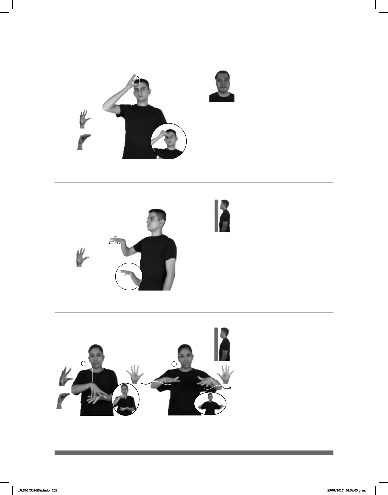

202
(5-G 28)
(5-G 29) Araña
Seña: SM
Seña que pasa de
5.2 a O.9
Palma oblicua hacia
la izquierda y hacia dentro.
Sobre la frente.
El pulgar toca los
dedos de la mano.
v. tr. Adquirir el
conocimiento de algo por medio del
estudio o de la experiencia.
pro-YO QUERER APRENDER MUCHO COSA
Yo quiero aprender muchas cosas.
Seña: SM
5.2
Palma hacia abajo.
A la altura del pecho.
Recto hacia el
frente mientras cada uno de los dedos
se mueve alternadamente.
sust. f. Arácnido que se
caracteriza por secretar una
sustancia sedosa en forma de hilo con
la que teje una red (llamada telaraña)
que usa para atrapar insectos y para
desplazarse colgándose de ella.
____________________neg__
pro-YO NO GUSTAR ARAÑA
A mí no me gustan las arañas.
Seña: SC: I. SB; II. SS
I. MD seña que pasa de 5.4 a O.9;
II. 5.1
I. MD palma hacia abajo. MB palma
hacia arriba; II. Palmas hacia abajo.
I. La MD inicia sobre MB y termina a
la altura del cuello. MB a la altura del pecho; II. A
la altura del pecho del centro a los lados.
I. MD recto mientras el pulgar toca
los dedos de la mano; II. Las manos parten de un
mismo punto y luego se abren hacia los lados
mientras siguen una trayectoria ondulada.
sust. f. Conjunto de partículas muy
pequeñas que provienen de rocas cristalinas
desintegradas.
MAR ARENA
allá
MUCHA HABER
Hay mucha arena cerca del mar.
(5-G 30)
DLSM COMISA.indb 202 25/09/2017 02:34:03 p. m.